Lab 11 - Localization (Real)
4.27.23Introduction
In this lab I used a Bayes filter to localize my real robot within a known map.
Changes to the Codebase
To get us started we were provided with working Bayes filter code. This code only works for a single ToF sensor, and I wanted to use data from both sensors in for my filter. This would allow for better localization accuracy as it doubles the amount of information we get about the surroundings.
The required change is found in localization.py, where I had to edit the update_step function:
def update_step(self):
""" Update step of the Bayes Filter.
Update the probabilities in self.bel based on self.bel_bar and the sensor model.
"""
LOG.info("Update Step")
start_time = time.time()
self.bel = deepcopy(self.bel_bar)
for i in range(0, self.mapper.OBS_PER_CELL):
self.bel = self.bel * self.gaussian(np.sum(np.abs(self.mapper.obs_views[:, :, :, i, :] - self.obs_range_data[i, :]), axis=3), 0, self.sensor_sigma * 4) # edited for two sensors
self.bel = self.bel / np.sum(self.bel)
LOG.info(" | Update Time: {:.3f} secs".format(time.time() - start_time))
This change work in conjunction with the edits detailed in lab 10 to allow for measurements to be passed as config/world.yml, making it easy to configure to your robot's specification.
Additionally, I had to change some parts of the codebase to accommodate for my asynchronous BLE reads. These edits were:
Adding the async keyword lab11_real.ipynb/RealRobot.perform_observation_loop
async def perform_observation_loop(self, rot_vel=120):
Adding the async keyword to localization.py/BaseLocalization.get_observation_data and the await keyword when calling RealRobot.perform_observation_loop inside of it
async def get_observation_data(self, rot_vel=120):
self.obs_range_data, self.obs_bearing_data = await self.robot.perform_observation_loop(rot_vel)
Adding the await keyword when calling loc.get_observation_data in lab11_real.ipynb
await loc.get_observation_data()
I was then able to use await asyncio.sleep(1) to execute a non-blocking delay while the BLE handler managed data.
Integrating the Real Robot
To integrate the real robot with the Bayes filter, I needed to make the robot return evenly spaced readings from a 360 degree pan.
My current data collection setup is very good at taking rapid readings, but not great at triggering readings at evenly spaced intervals. Instead of spending time writing and debugging new code, I decided to just reuse my old code.My routine takes as many ToF and gyroscope readings as possible in a 360 spin, then transmits the data back to the computer. On the Artemis I used the same PID angular speed controller is in lab 9, and my python code was as follows:
print("starting reading")
ble.send_command(CMD.ENABLE_BUFFER, "POSE")
ble.send_command(CMD.ENABLE_BUFFER, "TOF")
ble.send_command(CMD.SET_PID_GAINS,"ROTATION:|-0.01:|-0.001:|0.0")
ble.send_command(CMD.ENABLE_ROBOT, "")
await asyncio.sleep(20)
ble.send_command(CMD.DISABLE_ROBOT, "")
ble.send_command(CMD.DISABLE_BUFFER, "POSE")
ble.send_command(CMD.DISABLE_BUFFER, "TOF")
ble.start_notify(ble.uuid['RX_STRING'], ble_msg_handler)
CURR_LOG_ARRAY = tof
print("Retrieving TOF")
ble.send_command(CMD.RETRIEVE_BUFFER, "TOF")
await asyncio.sleep(5)
print("TOF retrieved")
CURR_LOG_ARRAY = pose
print("Retrieving POSE")
ble.send_command(CMD.RETRIEVE_BUFFER, "POSE")
await asyncio.sleep(10)
print("POSE retrieved")
Once I have the readings and their angles, I can find the readings that were taken closest to when the robots angle was at the correct orientation. Here's the code for extracting these readings:
tof = np.array(tof).astype('float64')
pose = np.array(pose).astype('float64')
ret_tof = np.zeros([18, 2])
temp = np.zeros([18, 3])
for i in range(0, 18):
angle = i * 20 # Target angle
angle_i = np.argmin(np.abs(pose[:, 3] - angle)) # Index of closest reading
angle_t = pose[angle_i, 0] # Time closest reading was taken
angle = pose[angle_i, 3] # Closest angle
closest_tof = np.argmin(np.abs(tof[:, 0] - angle_t)) # Index of closest TOF reading to the target time
tof_reading = tof[closest_tof, 1:3] / 1000 # Get the TOF reading in M
temp[i, :] = [tof_reading[1], tof_reading[0], angle]
ret_tof = temp[:, 0:2]
return ret_tof, bearings
I found on average the closest reading was less than half a degree from the target angle. This is more than close enough, as gyroscope drift and misalignment contribute considerably more. This approach has the added benefit of allowing me to edit the reading spacing without re-flashing the Artemis.
Results
The filter worked surprisingly well, localizing with high accuracy and extremely high certainty.
Here's a video of the entire localization process running:
And heres some data from specific points around the map. I included a picture of the robots real location, the predicted location from the filter, and console output showing the update time, certainty, and predicted angle.
Point Label: (-3, -2)
Ground Truth Location: (-0.9144, -0.6096, 0) (meters, meters, degrees)
Localization Prediction: (-0.914, -0.610, 10), 99.98% Certainty
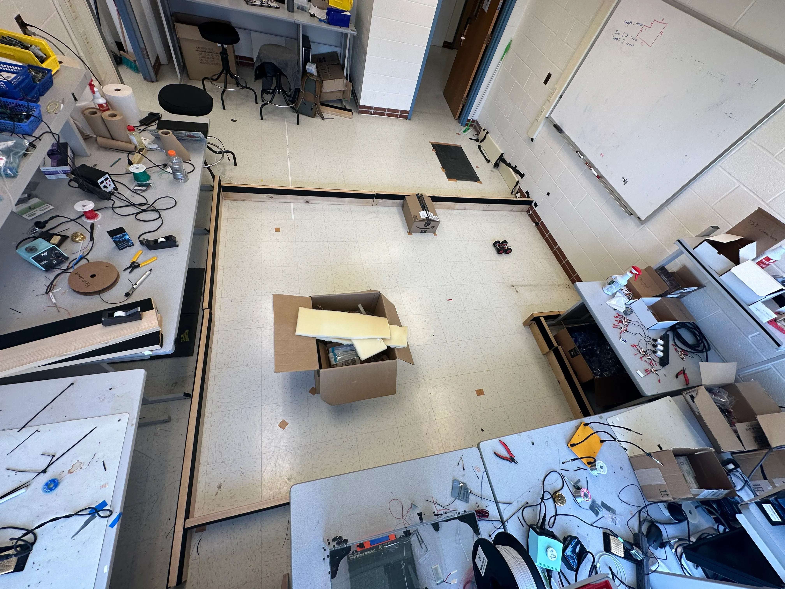
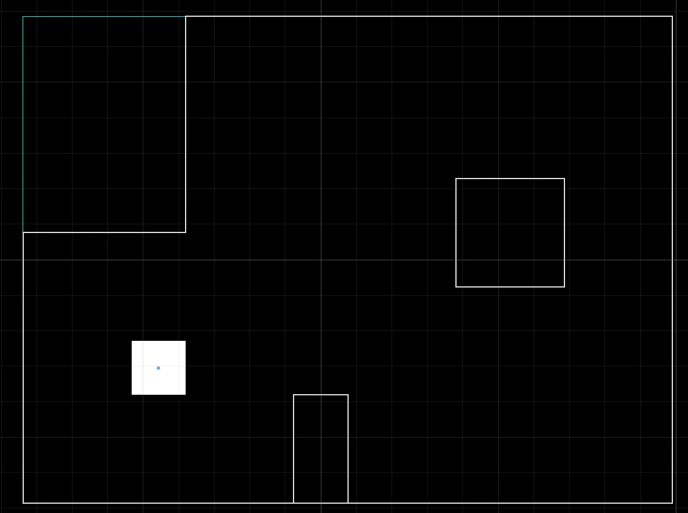
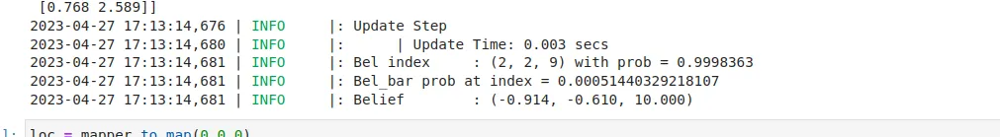
Point Label: (0, 3)
Ground Truth Location: (0, 0.9144, 0) (meters, meters, degrees)
Localization Prediction: (0, 0.914, 10), 99.99% Certainty
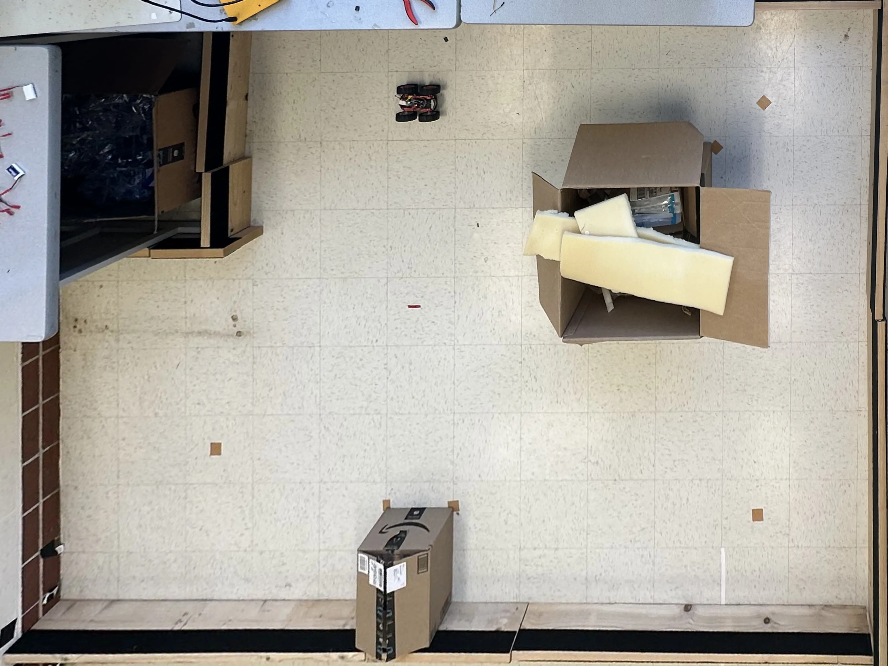
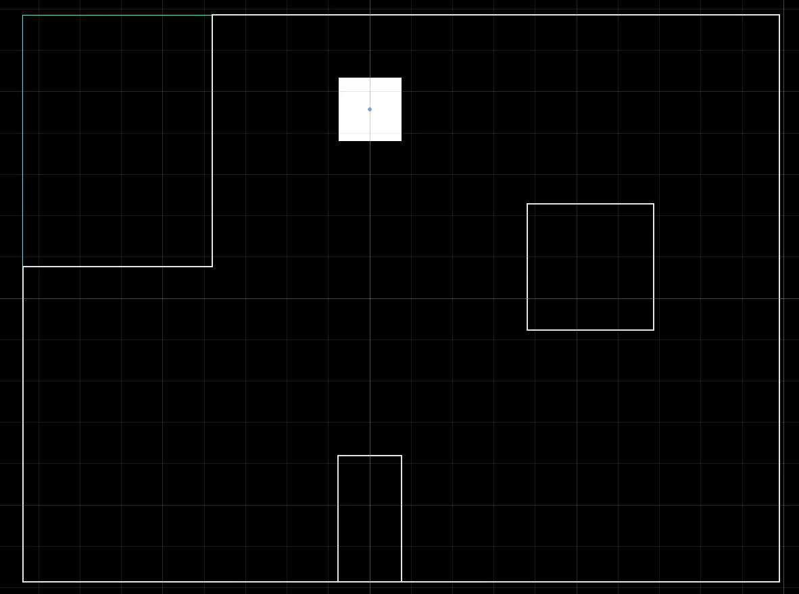
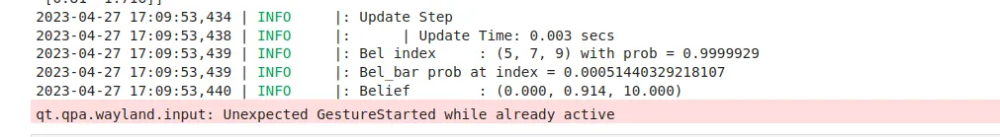
Point Label: (5, -3)
Ground Truth Location: (1.524, -0.9144, 0) (meters, meters, degrees)
Localization Prediction: (1.524, -0.914, 10), 99.24% Certainty
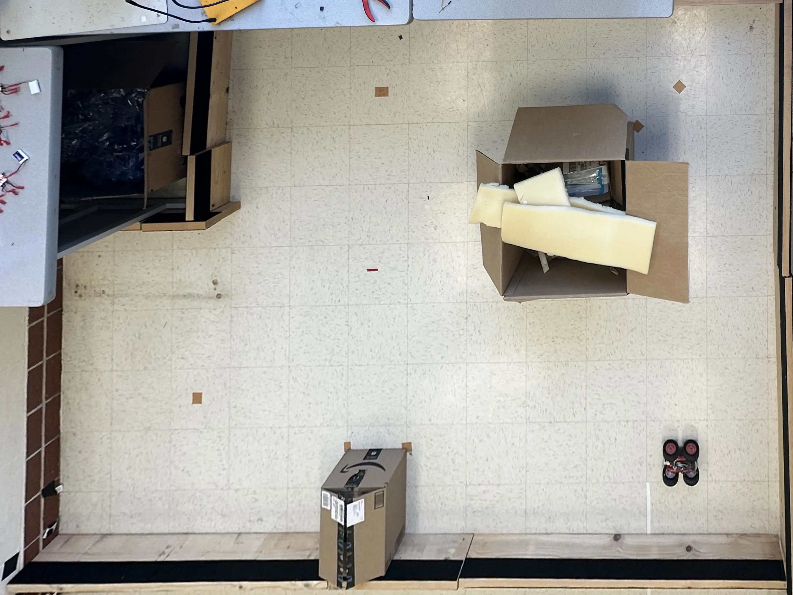
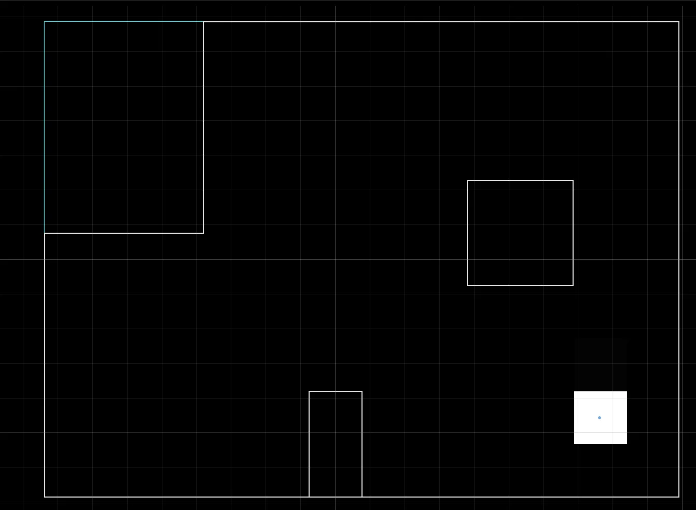
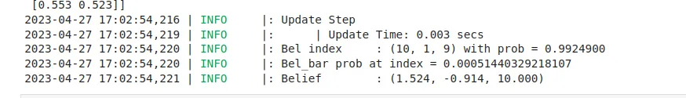
Point Label: (5, 3)
Ground Truth Location: (1.524, 0.9144, 0) (meters, meters, degrees)
Localization Prediction: (1.524, 0.610, 10), 90.28% Certainty
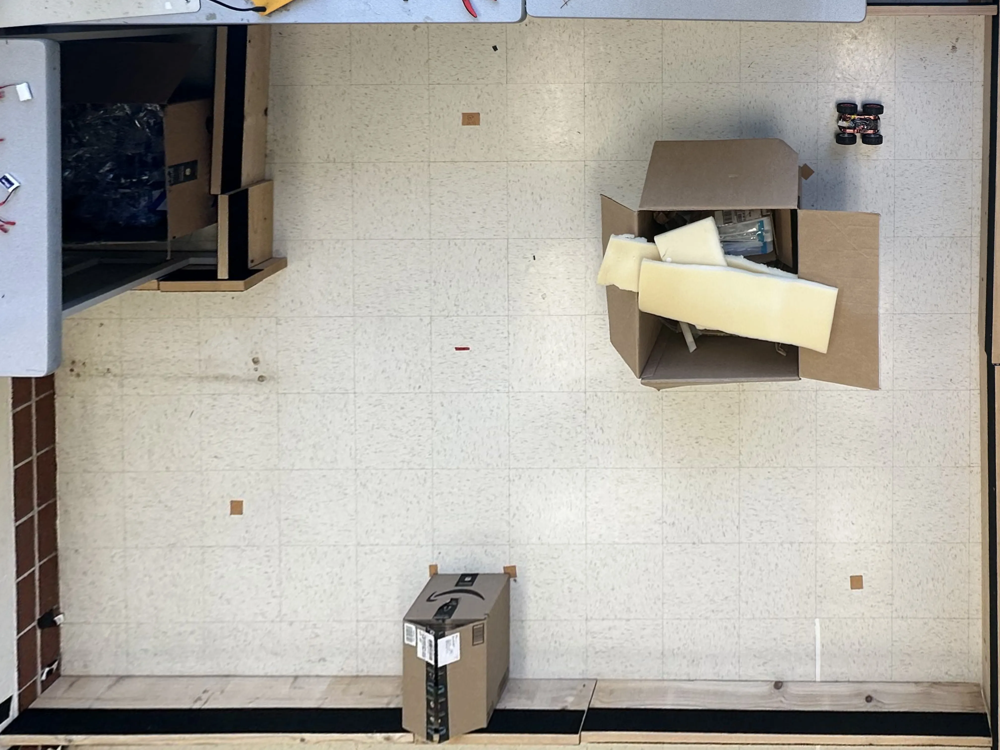
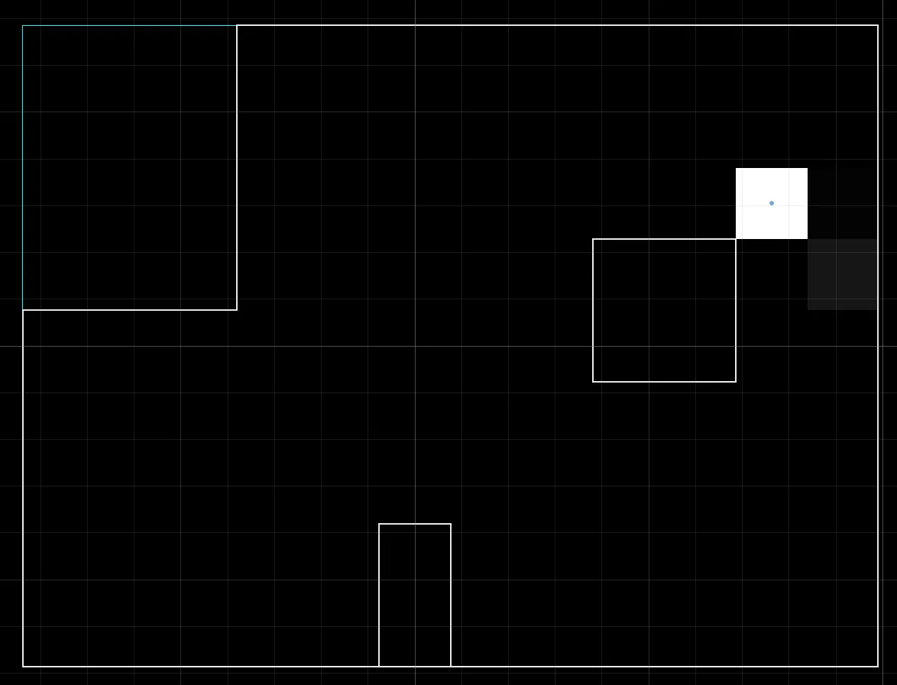
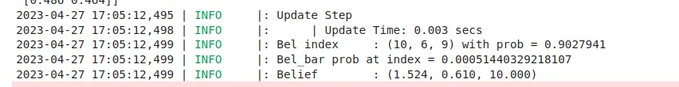
Note that in addition to the location being predicted correctly, the angle (which was 0 for all tests) was correctly predicted in at all locations (10 is the bucket closest to 0).
The point at (5,3) is slightly lower than the real world measurement due to an error in the simulated map. As seen from the overhead views, the box in the the real map is significantly higher than in the simulator. However, the Bayes filter gave a great estimate given the imperfect data, and signaled the discrepancy through a lower certainty value (90% vs the 99+% of the other readings).
Reflection
I honestly cannot believe this worked so well. These results were not cherry picked by the way, each is the output from my first attempt at that location. Additionally, I tested consistency at (0,0) and had no erroneous predictions over about 10 tests. Pretty impressive for a cheap little car!
I also seem to have considerably better results than students from past years. Two top scorers (Jack Defay and Anya Prabowo) both suffered from significant issues with finding the correct location.
I have two theories for why my solution performed well, but I'm not totally sure if either are the real reason. The first is my sampling method. By continuously sampling and taking only the readings that aligned with my target rotation, I was able to get high accuracy in their spacing.
The second is using both ToF sensors in my model. The obvious benefit is increased number of samples, but I don't think that alone would have enough of an effect. The two sensors should, in theory, get the same readings but 40 degrees apart. So theres no real "new" information, just a confirmation of the old info.
These explanations also wouldn't help with the symmetry issue, where two areas result in similar sensor readings because they share the same shape. The distribution was surprisingly highly uni-modal, with the certainty hovering around 95% or above. I would expect this to be much more distributed in places like (5,3) where the corner forms a common feature.
Either way I'm not complaining. Accurate localization will be a huge help in lab 12, where I attempt to make the car navigate through waypoints.